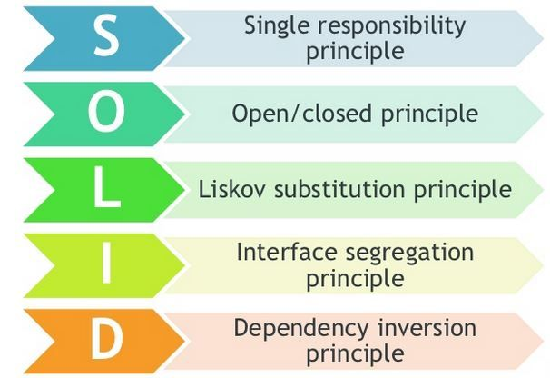

SOLID Principles
1 SOLID Principles of Class Design

Figure 1: SOLID Principles [from Web]
2 (SRP) The Single Responsibility Principle
A class should have only one reason to change. If there are multiple motivations for changing a class, it obviously has more than one responsibility. When these axes of change occur, the class will probably need to have different aspects of its behavior changed, at different times and for different reasons.
Some examples of responsibilities to consider that may need to be separated include:
- Persistence
- Validation
- Notification
- Error Handling
- Logging
- Class Selection
- Formatting
- Parsing
- Mapping
3 (OCP) The Open Closed Principle
Classes and methods should be open for extension (of functionality) and closed for modification. In practice, this means creating software entities whose behavior can be changed without the need to edit and recompile the code itself. The simplest way to demonstrate this principle is to consider a method that does one thing. Let’s say it writes to a particular file, the name of which is hard-coded into the method. If the requirements change, and the filename now needs to be different in certain situations, we must open up the method to change the filename. If, on the other hand, the filename had been passed in as a parameter, we would be able to modify the behavior of this method without changing its source, keeping it closed to modification.
4 (LSP) The Liskov Substitution Principle
Subtypes must be substitutable for super type. A sub class must enhance functionality, but not reduce. Introductions to object-oriented development discuss inheritance, and explain that one object can inherit from another if it has an IS-A relationship with the inherited object. However, this is necessary, but not sufficient.
Note that some argue that LSP is not an OOD principle.
More on this at ./liskov-subst-principle.html
5 (ISP) The Interface Segregation Principle
Many client-specific interfaces are better than one general-purpose interface. ISP recommends clients should not be forced to depend on methods that they do not use. Interfaces should belong to clients, not to libraries or hierarchies. Application developers should favor thin, focused interfaces to fat interfaces that offer more functionality than a particular class or method needs.
6 (DIP) The Dependency Inversion Principle
One should depend upon abstractions, [not] concrete things. High level modules should not depend on low level modules; both should depend on abstractions. Abstractions should not depend on details. Details should depend upon abstractions.
In this course: We replace the above with Design by Contract. This is often confused with LSP.
7 References
- https://deviq.com/solid/ Recommended Reading.
- https://en.wikipedia.org/wiki/Dependency_inversion_principle Recommended Reading.
- Web site, http://www.oodesign.com Recommended Visit